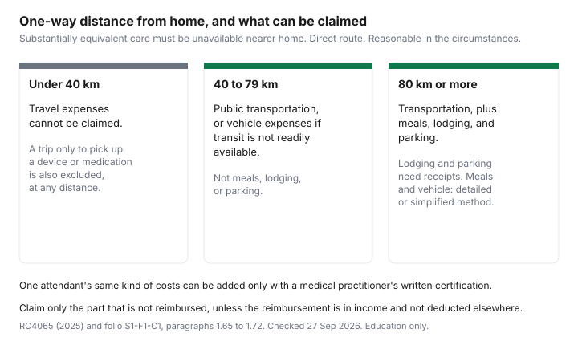

Healthcare · Canada
Claiming Medical Travel Costs in Canada: The 40 km and 80 km Rules, Meals, and Lodging
A specialist two hours away is a medical bill even when the clinic itself is paid by the provincial plan. Guide RC4065, Medical Expenses 2025, and Income Tax Folio S1-F1-C1 treat the drive, and sometimes the night and the meals, as eligible medical expenses when the distance tests are met. The amounts then sit on line 33099 or 33199 with your other eligible costs. How that credit clears the 3 percent threshold is the medical expense tax credit guide. This page is only the travel rules. It is education, not tax advice. Confirm the trip with the CRA before you rely on a number.
Key takeaways
- Three conditions come first: substantially equivalent care was not available near home, the route was reasonably direct, and it was reasonable to travel to that place.
- At least 40 kilometres one way: public transportation, or vehicle expenses if transportation services are not readily available. Under 40 kilometres, travel is not claimed. A trip only to pick up a device or medication is not claimed.
- At least 80 kilometres one way: add meals, lodging, and parking. Lodging and parking need receipts. Meals and vehicle costs can use the detailed method or the simplified method.
- For the 2025 tax year, the simplified meal rate on the CRA rates page is $23 per meal, to a maximum of $69 a day per person. Vehicle rates are cents per kilometre for the province or territory where travel begins. Ontario is 62.0 cents.
- One attendant's travel can be added when a medical practitioner certifies in writing that the patient could not travel alone. Claim only the unreimbursed part, unless the reimbursement was included in income and not deducted elsewhere.
When travel counts: substantially equivalent care not available closer to home
Distance is not the first test. Guide RC4065 says all of the following must be met before transportation and travel expenses are claimed. Substantially equivalent medical services were not available near your home. You took a reasonably direct travelling route. It is reasonable, under the circumstances, for you to have travelled to that place for those medical services. Folio paragraphs 1.65 and 1.68 use the same three ideas, and they measure the kilometres from the locality where the patient dwells.
"Substantially equivalent" is the sentence rural households skip. A closer clinic that does not provide the service you were referred for does not block the claim. A closer clinic that does provide it can. The guide's Paul example is the short version: he lives in St-Hyacinthe and travelled more than 40 kilometres one way, and less than 80, to Montréal because similar services were not available within 40 kilometres of his home. The page does not publish a map of what "similar" means for every specialty. If two hospitals both do the procedure, the question is whether the nearer one was substantially equivalent in your circumstances. That is a fact the CRA can ask about. Write down why the nearer option was not the one you used.
The route has to be reasonably direct, having regard to the circumstances. A detour to visit family is not the medical kilometres. The folio also says it must be reasonable to have travelled to that place. Travel outside Canada can qualify. The guide's John example is Winnipeg to Germany, by air, with a hotel for the week of care, because similar services were not available near home and the route was direct. The medical services themselves, paid to a medical practitioner or a public or licensed private hospital outside Canada, are a separate row in the guide. This page does not restate that row. What a provincial plan pays, and what it leaves you, for care away from home is the uninsured fees guide.
Two trips fail even when the odometer looks long. If you travelled less than 40 kilometres from home, you cannot claim travel expenses as medical expenses. You also cannot claim travel expenses if you travel only to pick up a device or medication. The prescription itself, when it is an eligible drug, is a different claim. How provincial plans price that drug is the provincial drug plans guide. An ambulance to or from a public or licensed private hospital is folio paragraph 1.64, a separate eligible expense, not this 40-kilometre test. Fees by province, where an official page was opened, are the ambulance costs guide.
40 km or more: public transit or vehicle costs
If you had to travel at least 40 kilometres one way from home to get medical services, you may be able to claim the public transportation expenses you paid, for example taxis, bus, or train. Where public transportation is not readily available, you may be able to claim vehicle expenses. The folio is slightly more precise about the vehicle step. Paragraph 1.65 is an amount paid to a person engaged in the business of providing transportation services, when the patient travels at least 40 kilometres. If that person is not readily available, subsection 118.2(4) allows reasonable expenses of operating a vehicle instead. Whether transportation services are readily available is a question of fact. A town with a bus that does not run on the day of the appointment is a different fact from a town with an hourly bus to the hospital door.
The vehicle, for that purpose, means any conveyance used to transport the patient by land, water, or air, including a vehicle owned by the person claiming the expenses, the patient, or a family member. You do not have to hire a stranger's car for the 40-kilometre rule to see a vehicle. You do have to be in the case where a transportation business is not readily available. Paul's example is that case: no public transportation readily available, so he can claim vehicle expenses, by the detailed or the simplified method.
Between 40 and 79 kilometres, stop at transportation. Meals, lodging, and parking are the next section. Do not add a hotel because the drive felt long. The threshold is 80 kilometres one way, not a round trip that adds up to 80.
80 km or more: add meals, lodging and parking
If you had to travel at least 80 kilometres one way, you may be able to claim accommodation, meal, and parking expenses in addition to transportation. The guide says this may include travelling outside Canada. Folio paragraph 1.68 is the "other reasonable travel expenses" rule, distinct from the transportation-business rule. Paragraph 1.69 says those expenses, including meals, accommodation, and parking, can cover the trip to the care, the trip home after the care is finished, and reasonable expenses during the time the patient is receiving services, if it was reasonable for the patient to remain there.
Accommodation is not a flat rate on the medical-expense pages opened for this article. You must keep receipts for all accommodation expenses. You must be able to show that the amount paid was necessary because of the distance travelled and your medical condition. Claim the amount on the receipts. Paragraph 1.72 repeats that accommodation and parking must be supported by receipts, and that the onus is on you to show the lodging was necessary because of distance or the patient's condition, not solely for convenience. A receipt for a night you could have driven home, with no medical reason to stay, is the convenience case the folio names.
Maria's example in the guide is the long stay. She travelled with her son from Sydney to Halifax, over 80 kilometres one way, with a letter that she could not travel without an attendant. She was in hospital for two weeks. Michael stayed in a hotel and helped with meals and personal care during the day, then drove her home. She can claim reasonable travel expenses for herself and her son while en route and for the two-week period of services in Halifax. Jennifer's example draws the line the other way. Stephen drove her from Prince Rupert to Vancouver and drove home. He visited once during a three-week admission, then came back to take her home. The travel to Vancouver and the drive home can be claimed. The visit in the middle cannot, for either of them.
A move into a care setting is not this trip. Fees for a nursing home or attendant care have their own rules, including a fork with the disability amount. Those dollars, where Ontario publishes a co-payment, are the long-term care guide. Do not put a monthly residence charge on this travel line because the home is far from your old address.
Detailed vs simplified method for vehicle and meal costs
You can choose the detailed or the simplified method for meal and vehicle expenses. If you use the detailed method, you keep all receipts and records for the 12-month period you are claiming. The guide sends the rates to the CRA page "Meal and vehicle rates used to calculate travel expenses." That page, opened for this article, is also the page used for moving expenses and the northern residents deduction. The rates below are the ones it prints for the 2025 tax year. Use the year that matches the return. Do not carry a 2025 cent into a different year without opening the chart again.
Simplified meals: a flat rate of $23 per meal, to a maximum of $69 per day, sales tax included, per person, in Canadian or US funds, without receipts. The page still says the CRA may ask for some documentation. Three meals is the daily cap, because three times $23 is $69. A fourth meal is not another $23 on that method.
Simplified vehicle: keep track of the kilometres driven during the 12-month period you choose for medical expenses. Multiply those kilometres by the cents-per-kilometre rate for the province or territory in which the travel begins, not the province where it ends. The 2025 chart on that page is below. Parking and lodging are not in the cents. They stay on receipts either way.
| Rule | What you can claim | Records |
|---|---|---|
| Under 40 km one way | Travel expenses are not a medical expense. A trip only to pick up a device or medication is not a travel claim at any distance. | Not a travel claim. |
| At least 40 km one way | Public transportation (taxi, bus, or train). Vehicle expenses if transportation services are not readily available. | Fares on receipts. Vehicle: detailed receipts, or a kilometre log times the simplified rate for where travel begins. |
| At least 80 km one way | The transportation above, plus meals, lodging, and parking. Includes travel outside Canada when the conditions are met. | Lodging and parking receipts. Meals: receipts, or $23 a meal to $69 a day per person for 2025. |
| 2025 simplified meals | $23 per meal, maximum $69 per day per person, sales tax included, Canadian or US funds. | No meal receipt required. The CRA may still ask for documentation of the trip. |
| 2025 cents per kilometre, where travel begins | Alberta 56.5; British Columbia 59.5; Manitoba 56.0; New Brunswick 59.5; Newfoundland and Labrador 61.5; Northwest Territories 70.0; Nova Scotia 59.5; Nunavut 70.5; Ontario 62.0; Prince Edward Island 58.5; Quebec 60.5; Saskatchewan 55.5; Yukon 70.5. | A log of kilometres for the 12-month medical period. Multiply by the rate for the starting province or territory. |
If you also qualify for northern residents deductions on line 25500, the guide says you may be able to choose how to claim. It points to Form T2222. This page does not restate that form. Do not claim the same kilometres twice. Which spouse's return should hold the medical total, once you have a number, is the spouse and 12-month guide.
Travel for an attendant, and the records to keep
If a medical practitioner certifies in writing that you were not able to travel alone to get medical services, you can also claim the transportation and travel expenses of an attendant. The folio says one individual who accompanies the patient, and only when the patient's own transportation or other reasonable travel expenses can already be claimed under the 40-kilometre or 80-kilometre rule. The certificate is about being incapable of travelling without an attendant. It is not a standing letter that a companion's holiday ticket is medical.
The attendant gets the same kind of expense, not a larger menu. If you are in the 40-to-79 kilometre band, the attendant's claim is transportation, not a hotel. If you are at 80 kilometres or more, meals, lodging, and parking can be part of that same kind of expense, still with the receipt rules. Maria's son stayed for the two weeks of care and that stay was claimable. Stephen's extra visit was not, even though Jennifer had a letter.
Do not send supporting documents with the return, whether you file electronically or on paper. Keep them in case the CRA asks. Receipts must show the name of the company or individual to whom the expense was paid. They should also show the purpose of the payment, the date of payment, the name of the patient, and, if applicable, the medical practitioner who prescribed the purchase or gave the service. The CRA may ask for proof of payment, such as a bank or card statement. A statement that says only "hotel" does not replace a receipt that names the hotel. For the simplified method, keep the kilometre log and enough detail that a later question about dates and purpose has an answer. The wider list of credits a household files in the same season is the credits checklist. File this travel claim from RC4065, not from that checklist.
A worked example of a specialist trip
This example is arithmetic on the 2025 Ontario simplified rate. It is not a CRA example, and it is not your trip. Assume a patient in rural Ontario whose specialist visit is 120 kilometres one way, 240 kilometres back and forth, because substantially equivalent care is not available closer to home, the route is direct, and it is reasonable to go. Public transportation is not readily available, so vehicle expenses are the claim rather than a bus fare. The distance is at least 80 kilometres, so meals and, if a night is medically necessary, lodging and parking can be considered.
Vehicle, simplified, 2025, travel begins in Ontario: 240 kilometres times 62.0 cents is $148.80. Meals, labelled as an illustrative two meals on a same-day return, not a count the CRA assigned: 2 times $23 is $46, which is under the $69 daily maximum. If the day ran to three meals, the simplified cap is $69, not $92. Lodging is whatever the receipt shows, and only if you can show the night was necessary because of distance or condition. Parking is the receipt. Add those receipt amounts. Do not invent them. If a plan or a grant reimburses part of the $148.80 or the hotel, claim only the unreimbursed part, unless that reimbursement is included in income, such as a benefit on a T4, and you did not deduct it elsewhere.
Change the starting province and the cents change. The same 240 kilometres beginning in Saskatchewan, at 55.5 cents, is $133.20. Beginning in the Northwest Territories, at 70.0 cents, is $168.00. Those are the chart, not a suggestion to start the trip in a different territory. The detailed method can be higher or lower than $148.80 once fuel, a share of insurance, and the other operating costs on your receipts are added up. Use one method for the meal and vehicle calculation. Keep the receipts the method you chose requires.

Sources & date stamps
- Canada Revenue Agency, Guide RC4065, Medical Expenses 2025. Travel conditions, the 40-kilometre and 80-kilometre rules, detailed versus simplified methods, attendant certification, receipts, and the Paul, Maria, Jennifer, and John examples. Checked 27 Sep 2026.
- Canada Revenue Agency, Income Tax Folio S1-F1-C1, Medical Expense Tax Credit, chapter effective 15 Aug 2025. Paragraphs 1.64 to 1.72: ambulance, transportation services, vehicle operation, meals, accommodation, parking, and one attendant. Checked 27 Sep 2026.
- Canada Revenue Agency, Meal and vehicle rates used to calculate travel expenses. For the 2025 tax year: $23 per meal to a maximum of $69 per day per person; cents-per-kilometre chart by province and territory where travel begins, including Ontario at 62.0. Checked 27 Sep 2026.
- The lines 33099 and 33199 page is where the travel total joins the rest of the credit. The threshold arithmetic is the medical expense guide, not repeated as a new dollar here.
Frequently asked questions
Can I claim mileage to medical appointments?
You may be able to claim vehicle expenses when you had to travel at least 40 kilometres one way from home for medical services, public transportation was not readily available, and substantially equivalent care was not available nearer home. Guide RC4065, Medical Expenses 2025, says you choose the detailed method, which needs receipts, or the simplified method, which multiplies kilometres by the cents-per-kilometre rate for the province or territory where the travel begins. Under 40 kilometres, travel is not a medical expense. A trip only to pick up a device or medication is not either. This is education, not a ruling on your trip.
What is the 80 km rule?
If you had to travel at least 80 kilometres one way from home for medical services, Guide RC4065 says you may be able to claim accommodation, meal, and parking expenses in addition to transportation. The same three conditions still apply: substantially equivalent services were not available near your home, you took a reasonably direct route, and it was reasonable to travel to that place. Income Tax Folio S1-F1-C1 puts meals, accommodation, and parking under the 80-kilometre rule, and it says lodging and parking need receipts. Between 40 and 79 kilometres, those extras are not added.
What is the simplified method?
The simplified method uses CRA flat rates instead of a stack of meal and fuel receipts. For the 2025 tax year, the meal and vehicle rates page says $23 per meal, to a maximum of $69 per day per person, sales tax included, in Canadian or US funds. Vehicle expenses are the kilometres you log, times the cents-per-kilometre rate for the province or territory where the travel begins. Ontario's 2025 rate on that chart is 62.0 cents. You still keep a record of trips. The CRA may ask for documentation even when you skip meal receipts. Lodging and parking stay on actual receipts.
Can I claim a companion's travel?
One attendant can be claimed when a medical practitioner certifies in writing that you were not able to travel alone. Guide RC4065 and folio paragraph 1.70 both use that written certification. The attendant's claim is the same kind of transportation or travel expense that qualifies for you, not a second category. In the guide's Jennifer example, the husband's drive to the hospital and the drive home can be claimed, and a separate visit in the middle of the stay cannot. The certification is about the patient being unable to travel alone. It is not a letter that every family member's ticket is eligible.
What receipts do I need?
Do not send receipts with the return. Keep them. A receipt must show the name of the company or individual you paid. The guide also says a receipt should show the purpose of the payment, the date, the patient's name, and, where it applies, the medical practitioner. Accommodation receipts are required, and you must be able to show the stay was necessary because of distance and your medical condition, not only convenience. Under the simplified method you do not need a meal receipt, but you keep a log of kilometres and trips. Claim only the part that will not be reimbursed, unless that reimbursement is included in your income and was not deducted elsewhere.